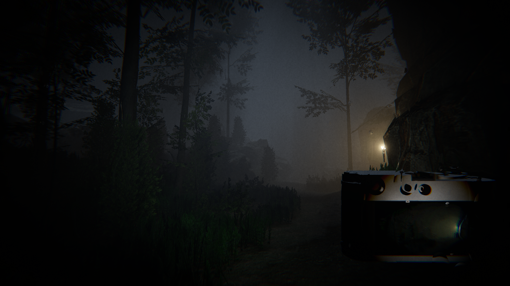
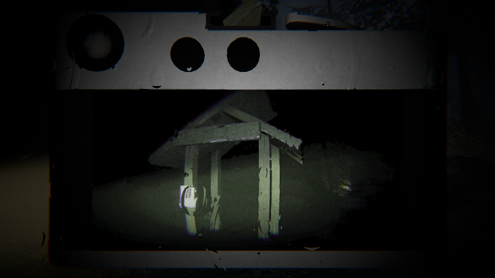

Project Summary - The game takes place deep in the forest where you have to use a camera with strange powers to find out what happened to your partner. This project tested my abilty to keep my game performant friendly. This is my first real attempt to achieve realistic rendering in games. I used tree and rock assets with a large number of vertices in a vast forest. I had to create LODs to help keep the number low. I also had to learn the differenc between SRP batching and GPU instancing to see which would work best in this situation. I also learned how to use the occlusion culling system in Unity to help performance as well.
Overview of my responsibilities
- Enviornmental Design.
- Post processing.
- Shaders.
My Contributions
- Rain VFX
- Camera post processing
- Lighting shader
- Terrain shader
- LODs, GPU instancing, occlusion culling
Environment

- Volumentric Lighting.
- Foliage and Rock LODs.
- Terrain shading with custom lighting.
- GPU instancing on on most environmental assets.
- Occlsuion culling.
- Toggleable fullscreen rain shader.
Camera

- Custom camera post processings.
- Draws from a render texture.
- Toggleable fullscreen rain shader.